Как делать мультики через терминал
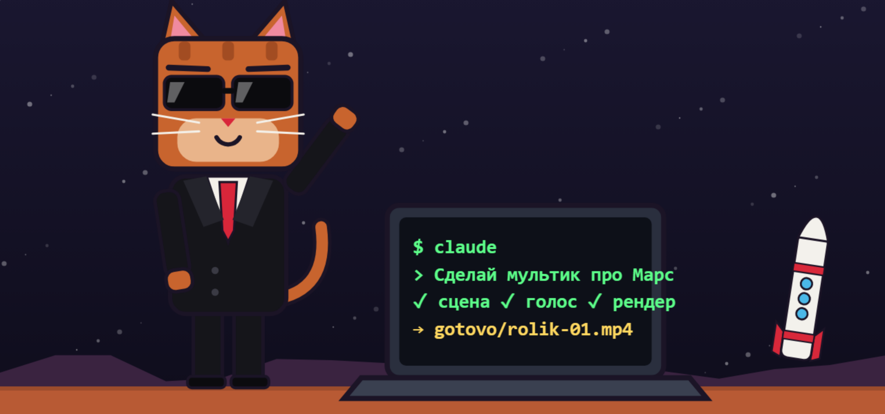
Что внутри
Пошаговая инструкция: от создания аккаунта до публикации готового ролика. Она подходит для любого мультика, героя и темы. Здесь вы получаете технологию, а идеи можете брать свои.
Как читать: идите по порядку. Команды копируйте из серых блоков, а зелёные блоки показывают, что шаг выполнен.
Карта пути
| Этап | Главы | Ориентир | Результат |
|---|---|---|---|
| Подготовка | 0–5 | 1–2 часа | Claude Code работает, папка создана |
| Первый результат | 5.1 | 15 минут | Короткое тестовое видео |
| Свой стиль | 6–9.1 | 1–2 часа | Герой, стиль, сценарий, голос и шаблоны |
| Первый ролик | 10–12 | От нескольких часов | Готовый ролик опубликован |
| Рост | 13–14.3 | По мере необходимости | Данные, Telegram и своя система работы |
Время указано как ориентир: оно зависит от компьютера, интернета и сложности ролика.
На каждом этапе смотрите блок «Проверка». Если результат совпал, идите дальше. Если нет, откройте главу 11.
Часть 1. Подготовка
0. Перед стартом
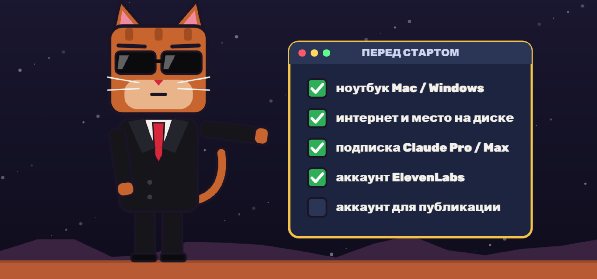
Вам понадобятся:
- ноутбук или компьютер: macOS 13+ или Windows 10 версии 1809+, минимум 4 ГБ оперативной памяти
- интернет и свободное место на диске
- платная подписка Claude Pro или Max
- аккаунт ElevenLabs для озвучки
- аккаунт Instagram или другой площадки для публикации
Важно до оплаты
- Claude Code работает только в странах, которые поддерживает Anthropic. России в этом списке нет. Проверьте актуальный список стран.
- Обходы ограничений в этой инструкции не описаны: они нарушают правила сервиса, и аккаунт могут закрыть.
- Пользоваться сервисом можно с 18 лет.
1. Как всё устроено
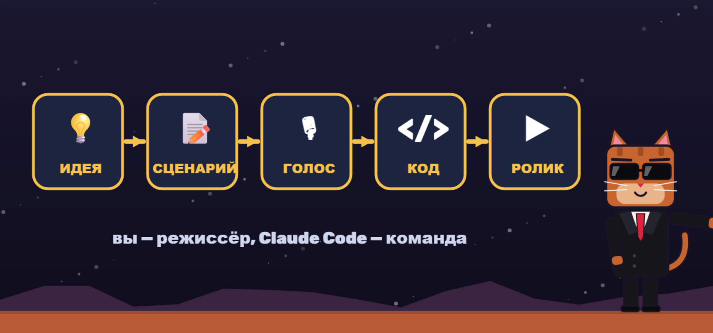
Вы не рисуете каждый кадр и не пишете код вручную. Вы работаете как режиссёр: придумываете идею и описываете результат. Claude Code пишет код, строит 3D-сцену, анимирует её и собирает видео.
Путь каждого ролика одинаковый:
- Вы придумываете идею и героя.
- Пишете и утверждаете сценарий.
- Озвучиваете его.
- Описываете сцены в задании для Claude Code.
- Проверяете тестовые кадры.
- Запускаете полный рендер и публикуете ролик.
Внутри обычно работает такая связка: Three.js строит 3D-сцену, браузер без окна снимает кадры, ffmpeg собирает их в видео со звуком. Запоминать это не нужно: Claude Code настроит всё сам.
2. Аккаунт и подписка
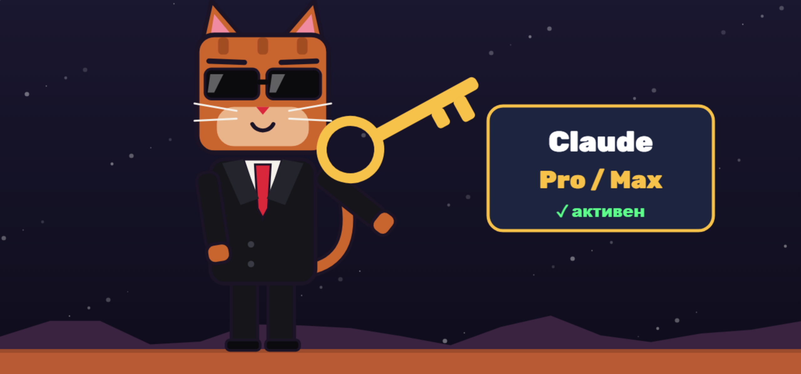
- Зарегистрируйтесь на claude.ai.
- Откройте настройки и раздел с подпиской.
- Выберите тариф. Claude Code входит в личные тарифы Pro и Max. Для старта подойдёт Pro. Max берите, если часто упираетесь в лимиты. Актуальные цены смотрите на странице тарифов.
- Оплатите подписку.
Если лимит закончился, он обновится позже. Сервис покажет время обновления.
3. Запускаем терминал
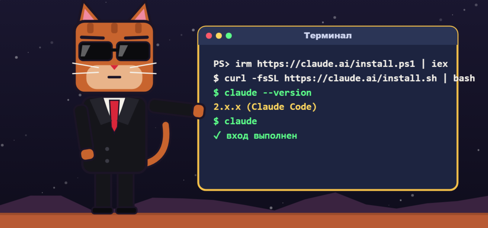
Как открыть:
- Mac: нажмите Cmd + Пробел, введите Terminal, нажмите Enter.
- Windows: откройте меню Пуск, введите PowerShell, откройте программу.
Вставьте команду для своей системы и нажмите Enter.
Mac
curl -fsSL https://claude.ai/install.sh | bashWindows
irm https://claude.ai/install.ps1 | iexЗакройте терминал, откройте его снова и проверьте установку:
claude --versionДолжен появиться номер версии. Затем запустите программу:
claudeВойдите тем же аккаунтом, что и на claude.ai. Если вход не предложен или выбран другой аккаунт, напишите внутри программы:
/loginЕсли на компьютере задана переменная ANTHROPIC_API_KEY, Claude Code будет тратить деньги с API-ключа, а не лимиты подписки. Новичку она не нужна.
Чтобы выйти из Claude Code, напишите /exit.
4. Нужные программы
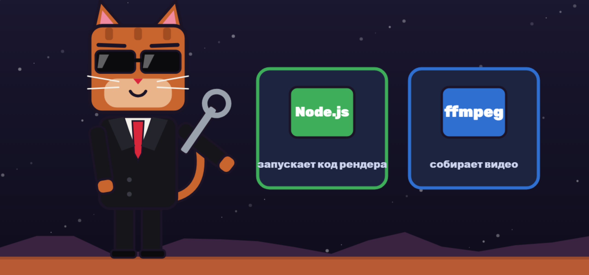
Node.js запускает код рендера, ffmpeg собирает видео.
Mac
Сначала установите Homebrew:
/bin/bash -c "$(curl -fsSL https://raw.githubusercontent.com/Homebrew/install/HEAD/install.sh)"Если установщик покажет дополнительные команды, выполните их. Затем:
brew install node ffmpegWindows
winget install OpenJS.NodeJS.LTS
winget install Gyan.FFmpegПерезапустите терминал и проверьте:
node -v
ffmpeg -versionЕсли появилась ошибка, запустите Claude Code и напишите: «Проверь Node.js и ffmpeg, объясни ошибку и помоги установить». Перед установкой он спросит разрешение.
5. Папка проекта
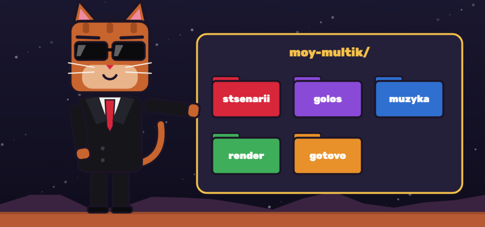
У каждого проекта своя папка на рабочем столе. Лучше называть папки латиницей и без пробелов.
Mac
cd ~/Desktop
mkdir moy-multik
cd moy-multik
mkdir stsenarii golos muzyka render gotovo
claudeWindows
cd $HOME\Desktop
mkdir moy-multik
cd moy-multik
mkdir stsenarii, golos, muzyka, render, gotovo
claudeЕсли рабочий стол находится в OneDrive, откройте его папку через Проводник и нажмите правой кнопкой «Открыть в терминале».
| Папка | Что лежит |
|---|---|
| stsenarii | тексты роликов |
| golos | файлы озвучки |
| muzyka | фоновая музыка с правом на использование |
| render | код сцены и рендера |
| gotovo | готовые видео и обложки |
В каждом проекте запускайте Claude Code из его папки. Так он видит нужные файлы.
5.1. Первый результат за 15 минут
Пока не думайте о сценарии и голосе. Вставьте задание ниже и получите первое видео.
Сделай в папке gotovo тестовое видео test.mp4: 1080×1920, 30 fps, 5 секунд, H.264 yuv420p, без звука.
На чёрном фоне появляется простая оранжевая 3D-фигура, камера плавно её облетает.
В конце на экране появляется слово «Готово».
Проверь файл через ffprobe и покажи мне результат проверки.Часть 2. Ваш стиль
6. Идея и герой
Сначала ответьте на четыре вопроса:
- Кто герой и как он говорит?
- Что зритель получает от ролика?
- В каком мире всё происходит?
- Какое действие вы ждёте от зрителя?
Придумайте своего героя. Не используйте чужих персонажей, логотипы и узнаваемый стиль известных брендов.
Попросите Claude Code создать файл стиля:
Создай файл style.md для вертикальных мультиков.
Тема: [ваша тема].
Герой: [внешность, возраст, характер].
Мир: [где происходит действие].
Визуал: [например, воксельный, пластилиновый, плоский 2D].
Опиши палитру с HEX-цветами, шрифты, субтитры, движение камеры и запреты.
Сделай одну тестовую картинку с героем и покажи её мне.
Продолжай только после моего подтверждения.Файл стиля важнее всего: он делает все ролики одного проекта похожими друг на друга.
Библиотека визуальных стилей
Чтобы сравнить стили без лишних затрат, попросите:
Сделай для моей сцены три контрольных кадра в разных стилях.
Не делай анимацию. Покажи кадры рядом и объясни, какой стиль лучше подходит теме.
Используй только мои оригинальные объекты.7. Сценарий
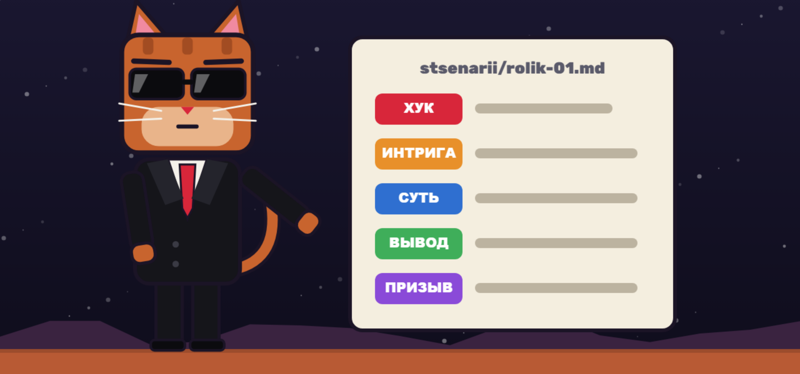
Хороший короткий сценарий строится так:
- Хук: первые 2–3 секунды с сильной фразой, без приветствий.
- Интрига или проблема: зачем смотреть дальше.
- Суть: одна главная мысль простыми словами.
- Вывод: что зритель должен запомнить.
- Призыв: подписаться, написать комментарий или перейти дальше.
Ориентир: 40–45 секунд это около 100 слов.
Шаблон:
Напиши сценарий на [длина] секунд.
Тема: [тема].
Аудитория: [кто смотрит].
Главная мысль: [одна мысль].
Тон: [как говорит герой].
Структура: хук, интрига, суть, вывод, призыв.
Разбей текст на сцены. Для каждой сцены укажи:
ГОЛОС: что говорит герой;
КАДР: что видно на экране;
ТЕКСТ: что написано на экране.
Сохрани результат в stsenarii/rolik-01.md.Не начинайте озвучку, пока не утвердите текст.
8. Голос
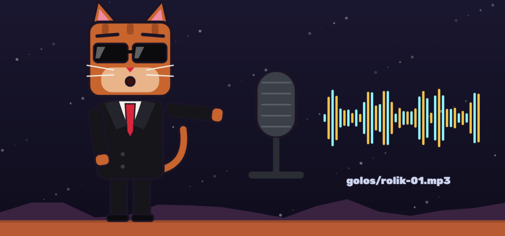
- Зарегистрируйтесь на ElevenLabs.
- Выберите голос под героя.
- Вставьте утверждённый текст.
- Сделайте один дубль, чтобы экономить кредиты.
- Если не подошла одна фраза, переозвучьте только её.
- Сохраните файл в папку golos как rolik-01.mp3.
Для коммерческих роликов проверьте условия своего тарифа ElevenLabs.
Таймстампы показывают, когда звучит каждое слово. По ним синхронизируются субтитры и смена сцен. Попросите:
Получи таймстампы каждого слова из golos/rolik-01.mp3.
Используй ElevenLabs Speech-to-Text. Если ключа нет, спроси меня один раз
или используй локальный whisper.cpp.
Сверь слова со сценарием и сохрани результат в render/words.json.API-ключ не публикуйте и не отправляйте другим людям. Если он случайно попал в открытый доступ, удалите его в настройках ElevenLabs и создайте новый.
9. Как писать промпты
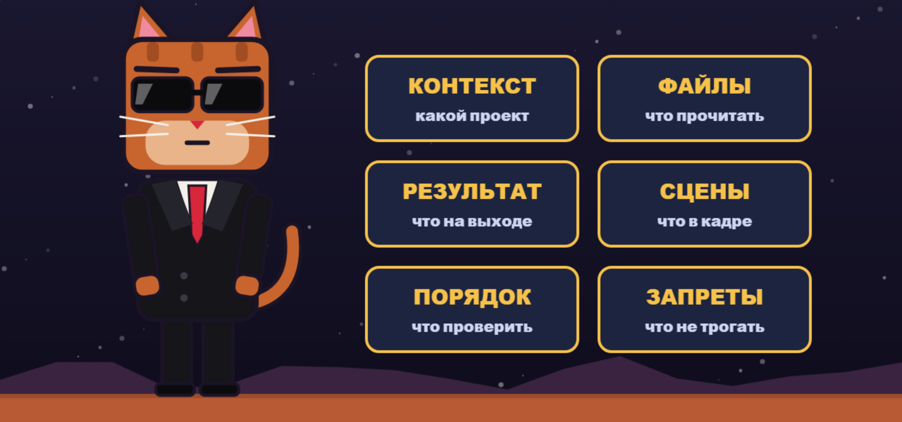
Плохой промпт: «Сделай красивый мультик». Claude Code придётся угадывать почти всё.
Хорошее задание отвечает на шесть вопросов:
- Контекст: какой это проект.
- Файлы: что прочитать.
- Результат: что получить на выходе.
- Сцены: что показать в каждый момент.
- Порядок: что проверить до полного рендера.
- Запреты: что менять нельзя.
Три правила экономят больше всего времени и лимитов
- Описывайте результат, а не код.
- Давайте одну большую задачу по шагам.
- Сначала просите тестовые кадры, потом полный рендер.
Главный шаблон:
Ты собираешь вертикальный ролик для Reels.
Прочитай: style.md, stsenarii/rolik-01.md, render/words.json.
Аудио: golos/rolik-01.mp3, музыка: muzyka/fon.mp3.
Результат:
- gotovo/rolik-01.mp4: 1080×1920, 30 fps, H.264 yuv420p, AAC, звук с хвостом 0,8 с;
- gotovo/cover-01.png: обложка 1080×1920.
Технология: Three.js для сцены, Puppeteer для покадрового рендера,
ffmpeg для сборки. Все анимации должны зависеть только от времени t.
Не используй случайные значения без seed.
Субтитры: по 1–3 слова, строго по words.json.
Смена кадра каждые 2–4 секунды, камера всегда немного движется.
Важное держи вне зон интерфейса Instagram: верх 170 px, низ 420 px, правый край 150 px.
Музыка тише голоса примерно на 15–20 дБ.
Порядок работы:
1. Покажи план и проверь окружение.
2. Сделай контрольные кадры по одному на сцену в render/test/.
3. Сам открой их и проверь.
4. Покажи кадры мне и дождись подтверждения.
5. Запусти полный рендер.
6. Проверь файл через ffprobe и напиши отчёт.
Не меняй текст озвучки. Не показывай чужие логотипы и персонажей.Разбор: плохо и хорошо
| Плохо | Хорошо | Почему лучше |
|---|---|---|
| Сделай красиво | Сделай ночной город, тёплый свет, малая глубина резкости, один акцент оранжевым | Есть конкретный стиль |
| Анимируй героя | Герой поднимает руку на 3-й секунде, держит жест 1 секунду и опускает её | Понятны действие и время |
| Улучши сцену | В сцене 3 добавь передний план и контровой свет. Остальное не меняй | Claude не трогает лишнее |
| Сделай субтитры | Субтитры по 1–3 слова по words.json, крупно, выше нижних 420 px | Текст совпадает с голосом и не мешает интерфейсу |
| Исправь ошибку | Вот текст ошибки. Объясни причину и повтори только сломанный шаг | Claude работает с фактами |
| Сделай длинный ролик | Сначала покажи план и 6 контрольных кадров, потом жди подтверждения | Вы экономите лимиты |
Если не знаете, как описать проблему, вставьте кадр и напишите: «Что здесь мешает? Дай три варианта исправления и не меняй файлы, пока я не выберу».
9.1. Навыки для сильной анимации
Навыки дают Claude Code готовые инструкции для конкретных задач. Для обычного мультика они необязательны, но помогают делать анимацию, 3D-сцены и субтитры сложнее и чище.
Откройте терминал в папке проекта. Если Claude Code запущен, сначала выйдите через /exit. Затем выполните команды:
npx skills add heygen-com/hyperframes --skill hyperframes -a claude-code --copy -y
npx skills add remotion-dev/skills --skill '*' -a claude-code --copy -y
claude plugin marketplace add anthropics/skills --scope project
claude plugin install example-skills@anthropic-agent-skills --scope projectПосле установки снова запустите claude. Для HyperFrames нужен Node.js 22 или новее и ffmpeg.
| Набор | Для чего подходит |
|---|---|
| HyperFrames | Видео из HTML, анимация и 3D-сцены с рендером в MP4 |
| Remotion | Анимация на React, субтитры, предпросмотр и рендер |
| example-skills от Anthropic | Дополнительные навыки, включая визуальный дизайн |
Проверьте набор тестовым заданием:
Сделай отдельную папку test-skills.
Создай через HyperFrames 5-секундный тест 1080×1920: моя оригинальная 3D-сцена на чёрном фоне.
Создай через Remotion 5-секундный тест 1080×1920: анимированный заголовок и субтитры.
Проверь оба файла через ffprobe и открой контрольные кадры.Устанавливайте только наборы из известных источников: навыки могут запускать команды на компьютере. Для коммерческих проектов проверьте лицензию Remotion: у некоторых компаний она может быть платной.
🐱 Навыки и агенты MARS CITY
Это полный набор, на котором работает наш канал. Всё лежит в папке проекта: навыки — в .claude/skills/, агенты — в .claude/agents/.
Наши навыки для конвейера мультика (порядок = путь ролика):
| Навык | Что делает | Как попросить |
|---|---|---|
| video-analyst | Рой агентов разбирает чужой ролик (хук, психология, звук, монтаж, тренды) и пишет оригинальный сценарий | «Разбери этот ролик и сделай похожий мультик без копирования: [ссылка]» |
| ai-art-prompter | Библия стиля и промпты для нейросетей-картинок, чтобы герой не «плыл» | «Сделай карточку героя кота-мэра и промпты на 5 кадров» |
| asset-compressor | Сжимает картинки и звук перед рендером | «Сожми ассеты ролика rolik-01» |
| audio-sync-master | Находит паузы и темп в голосе и музыке, считает тайминги смены кадров | «Посчитай тайминги сцен по golos/rolik-01.mp3» |
| one-click-director | Проверяет все папки, доделывает недостающее и собирает финальный ролик с обложкой | «Собери ролик rolik-01» |
Навыки для анимации и дизайна: hyperframes (+ cli, registry, media-use, figma, slideshow, style-sampling, reverse-any-video, remotion-to-hyperframes), 13 навыков Remotion (create, render, captions, markup, maps и др.), frontend-design, canvas-design, algorithmic-art, theme-factory, webapp-testing (проверка страниц и кадров в браузере), skill-creator (создать свой навык), find-skills (найти готовый навык).
Наши агенты — запускаются из Claude Code словами «отправь агентам»:
| Агент | Роль |
|---|---|
| va-03 Хук-Мастер | Разбирает первые 3 секунды: понятно ли без звука, есть ли движение |
| va-04 Психолог | Почему досмотрят, напишут коммент, вернутся завтра; риски для детской аудитории |
| va-09 Трендолог | Жив ли тренд, не поздно ли, как не стать копией |
| va-56 Звук | Темп речи, паузы, музыка и эффекты, права на музыку |
| va-78 Визуал | Читаемость на телефоне, длина кадров, стиль, стоимость производства |
| va-10 Режиссёр | Сводит отчёты, устраивает спор между агентами и выдаёт итоговые правки |
| va-11 Прогнозист | Шансы на взлёт 0–100 и прогноз просмотров (плохой / средний / хороший) |
| mc-proverka-kadrov | Чек-лист кадров перед рендером: текст не налезает, цифры сходятся |
| mc-zhiteli | Собирает новые комментарии и добавляет жителей и постройки на карту города |
| mc-oblozhki | 2–3 варианта обложки из готового видео |
| mc-analitik | Ведёт таблицу метрик серий |
Пример, как мы это используем:
Отправь сценарий stsenarii/rolik-01.md агентам: хук, психолог, тренды, звук, визуал и прогноз.
Пусть каждый найдёт ошибки и даст шансы на взлёт.
Потом режиссёр пусть устроит спор между отчётами и сведёт итоговые правки.
Файлы сценария не меняй, пока я не выберу правки.Часть 3. Первый ролик
10. Сборка ролика
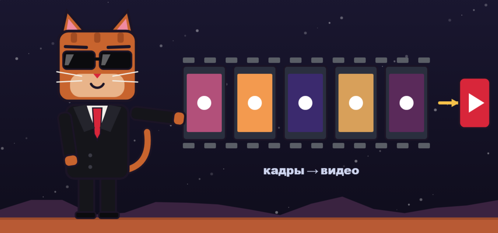
Порядок работы:
- Запустите claude в папке проекта.
- Вставьте главный шаблон и замените названия файлов.
- Прочитайте план.
- Разрешите установку нужных пакетов, если вы понимаете, что устанавливается.
- Посмотрите контрольные кадры.
- Попросите правки конкретными словами.
- Подтвердите полный рендер.
- Посмотрите видео со звуком до конца.
Правки пишите точно:
- Плохо: «Сделай лучше».
- Хорошо: «В сцене 3 подними героя на 15% и замени фон на вечерний. Остальное не меняй».
Чек-лист перед публикацией:
- Размер 1080×1920
- Хук виден и слышен с первого кадра
- Субтитры совпадают с голосом
- Важное не перекрывает интерфейс Instagram
- Музыка не заглушает голос
- В ролике нет чужих логотипов и чужих персонажей
Самую удачную сцену можно использовать как основу следующей. Попросите: «Сохрани рабочий рендер как шаблон для следующих роликов и опиши его в README.md».
11. Ошибки и лимиты
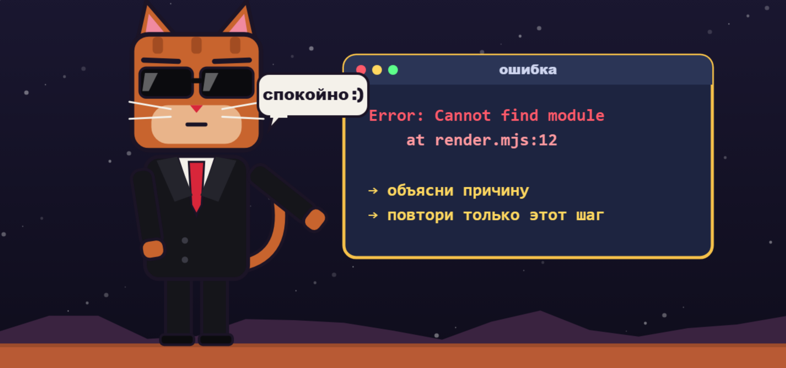
Если что-то пошло не так, не закрывайте окно. Скопируйте ошибку и напишите:
Вот ошибка: [текст].
Объясни простыми словами причину, предложи исправление и повтори только сломанный шаг.Ещё частые ситуации
| Проблема | Что делать |
|---|---|
| claude не найден | Закройте терминал, откройте снова и проверьте установку |
| Claude просит оплату API | Запустите /login и выберите подписку, проверьте ANTHROPIC_API_KEY |
| Рендер идёт очень долго | Попросите упростить дальние объекты и отрендерить только нужный участок |
| Кадры чёрные | Попросите проверить запуск WebGL в браузере без окна |
| Субтитры не совпадают | Получите таймстампы заново и пересчитайте сцены |
| Видео не загружается | Проверьте формат через ffprobe: H.264, yuv420p, AAC |
Как экономить лимиты:
- разбивайте большие ролики на части
- не запускайте полный рендер ради мелкой правки
- просите менять конкретную сцену, а не весь проект
- используйте /clear, когда начинаете новую задачу
- сохраняйте решения в файлы проекта
12. Публикация
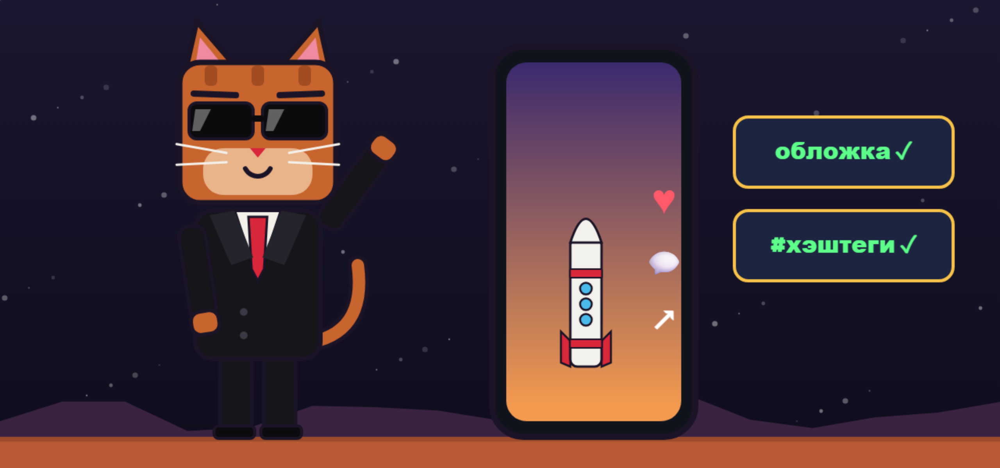
- Перенесите видео на телефон без сжатия, например через AirDrop или как файл.
- Посмотрите ролик на телефоне со звуком.
- Откройте Instagram и создайте Reels.
- Выберите обложку gotovo/cover-01.png.
- Напишите короткую подпись и один понятный призыв.
- Добавьте несколько точных хэштегов.
- После публикации закрепите комментарий с пояснением, если нужен отклик.
Попросите Claude Code подготовить подпись:
На основе stsenarii/rolik-01.md напиши подпись для Reels:
короткий заход, 2–3 строки пользы, один призыв и 5–8 точных хэштегов.
Дай 3 варианта.Часть 4. Рост проекта
13. Комментарии и подписчики
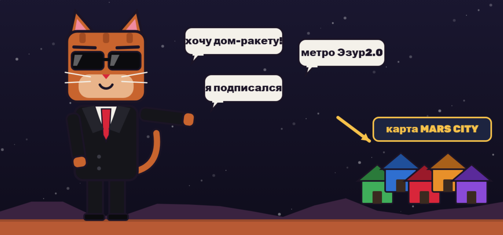
Эти данные помогают делать интерактивные проекты: брать идеи из комментариев, показывать ники в роликах и отвечать на вопросы аудитории. Работайте только со своими аккаунтами и не выгружайте чужие личные данные.
Подписчики: официальная выгрузка. В Instagram откройте Центр аккаунтов, затем «Ваша информация и разрешения» и «Экспорт информации». Выберите JSON и раздел с подписчиками. Подготовка архива может занять время, а файл придёт в уведомлении или на почту.
Комментарии: официальный API. Для своих публикаций в профессиональном аккаунте можно использовать Instagram Graph API. Один запрос возвращает до 50 комментариев, остальные загружаются постранично. Попросите:
Помоги подключить официальный Instagram Graph API для моего профессионального аккаунта.
Нужно выгрузить комментарии к моей публикации в comments.json.
Объясняй по одному шагу. Токен храни в .env и не показывай его в чате.Если комментариев мало, их можно скопировать вручную в текстовый файл.
Скрипты и сторонние сервисы для автоматического сбора данных могут нарушать правила Instagram и привести к ограничениям. Не вводите пароль от Instagram в непроверенные сервисы.
Когда файлы готовы, положите их в папку проекта и напишите:
Прочитай comments.json и followers.json.
Убери дубли, сгруппируй запросы по смыслу и покажи главные темы.
Отметь оскорбительные и странные запросы отдельно.
Сохрани таблицу в data/spisok.csv и предложи 5 идей для следующих роликов.14. Перевод в Telegram
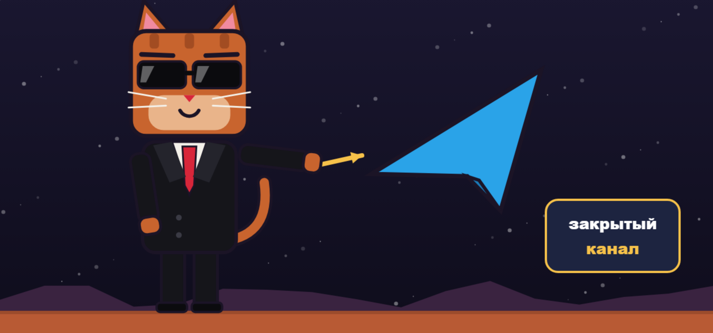
Подписчик переходит в Telegram не потому, что вы попросили, а потому что там есть то, что ему нужно. Рабочая схема выглядит так:
- Сделайте закрытый канал с вступлением по заявкам.
- Поставьте ссылку на него в профиль Instagram.
- Дайте в канале то, чего нет в Instagram: полезный файл, сайт проекта или участие в событии.
- Покажите в ролике, что человек получит, и как пройти путь по шагам.
- Переносите активность: голосования, ранний доступ и разделы проекта можно давать только внутри канала.
- Регулярно принимайте заявки, чтобы люди не ждали слишком долго.
- Не обещайте призы или деньги, если не можете выполнить обещание.
Пример сильной связки: зритель видит результат в ролике, оставляет заявку и получает внутри канала возможность найти своё имя или повлиять на следующий выпуск.
14.1. Продвинутая работа в Claude Code
Этот раздел можно читать после первого готового ролика. Он помогает реже застревать, быстрее править визуал и тратить меньше лимитов.
Файл CLAUDE.md
CLAUDE.md загружается в начале каждой сессии. Записывайте туда только короткие правила, которые Claude не поймёт из файлов проекта. Запустите:
/initЗатем откройте файл через /memory и добавьте правила проекта. Пример:
# Мой мультик
- Формат: 1080×1920, 30 fps, H.264 yuv420p, AAC.
- Стиль описан в style.md.
- Сначала делай контрольные кадры, потом полный рендер.
- Не меняй текст озвучки без моего подтверждения.
- Готовые файлы сохраняй в gotovo.Команды внутри Claude Code
Доступные команды могут меняться: введите /, чтобы увидеть текущий список. Некоторые команды появляются только в свежих версиях Claude Code.
| Команда | Когда использовать |
|---|---|
| /plan | Перед большой задачей, чтобы сначала увидеть план |
| /context | Посмотреть, что занимает контекст |
| /compact | Сжать длинный разговор и продолжить задачу |
| /clear | Начать новую задачу с чистым контекстом |
| /resume | Вернуться к прошлому разговору |
| /branch | Попробовать другой визуальный вариант, не теряя текущий |
| /rewind | Откатить неудачные изменения к прошлой точке |
| /btw | Задать побочный вопрос, не засоряя основной разговор |
| /usage | Посмотреть расход лимитов |
| /doctor | Проверить установку и настройки |
| /verify | Попросить Claude запустить результат и проверить его |
| /goal | Дать цель, над которой Claude работает до выполнения условия |
Быстрые клавиши и символы
| Что нажать | Что произойдёт |
|---|---|
| @ | Подсказка файла, чтобы точно указать его в сообщении |
| ! в начале строки | Выполнить команду терминала прямо из Claude Code |
| Ctrl+V | Вставить картинку на Mac и во многих терминалах |
| Alt+V | Вставить картинку на Windows |
| Ctrl+B | Отправить долгую команду в фон |
| Ctrl+R | Найти прошлую команду |
| Esc два раза при пустом поле | Открыть меню отката |
Как проверять рендер
Попросите Claude показывать доказательства: команду, её вывод и контрольные кадры. Фразы «готово» недостаточно. Также можно проверить файл самостоятельно.
Проверить формат:
ffprobe -v error -show_entries stream=codec_name,width,height,r_frame_rate,pix_fmt -show_entries format=duration -of default=nw=1 gotovo/rolik-01.mp4Сделать лист кадров, по одному кадру каждые 3 секунды:
ffmpeg -y -i gotovo/rolik-01.mp4 -vf "fps=1/3,scale=270:-1,tile=6x3" -frames:v 1 kontakt.pngВытащить кадр с пятой секунды:
ffmpeg -y -ss 5 -i gotovo/rolik-01.mp4 -frames:v 1 kadr.pngСделать лёгкую версию для быстрого просмотра:
ffmpeg -y -i gotovo/rolik-01.mp4 -vf scale=540:-2 -c:a copy preview.mp4Как улучшать визуал
Покажите Claude картинку, что именно не нравится, и назовите конкретное изменение:
Посмотри на [Image #1]. Сцена выглядит плоской.
Добавь передний план, глубину резкости и контровый свет.
Меняй только сцену 3. Покажи один контрольный кадр и жди подтверждения.Хорошие слова для запросов: ракурс, композиция, передний план, контровый свет, глубина резкости, темп, пауза, ускорение, замедление, один акцентный цвет.
Скиллы для своего процесса
Если одну инструкцию вы повторяете каждый раз, сохраните её как свой скилл в .claude/skills/<имя>/SKILL.md. Claude загрузит её, когда она понадобится, поэтому длинный процесс не занимает контекст в каждой сессии.
Создай в этом проекте скилл render-check.
Он должен проверять размер, fps, длительность и звук через ffprobe,
делать лист кадров и писать короткий отчёт.
Отчёт сохраняй в render/check.md.Хорошие кандидаты для своих скиллов: проверка ролика, подготовка обложки, создание персонажа, разбор комментариев.
Бесплатное обучение от Anthropic
Если хотите глубже понять инструмент, пройдите Claude Code 101 в Anthropic Academy. Там есть разделы о рабочих процессах, контексте, CLAUDE.md, скиллах и хуках.
14.2. Шаблон проекта
Чтобы не настраивать каждый проект вручную, создайте основу один раз:
Создай в этой папке шаблон проекта для вертикальных мультиков.
Добавь папки stsenarii, golos, muzyka, render, gotovo.
Создай CLAUDE.md, style.md, stsenarii/primer.md и shablony-promptov.md.
В CLAUDE.md запиши: формат 1080×1920, 30 fps, сначала контрольные кадры, не менять текст озвучки без подтверждения.
В style.md оставь поля для героя, палитры, шрифтов, камеры и запретов.
В shablony-promptov.md добавь шаблоны для сценария, тестовых кадров, правки одной сцены и полного рендера.
Не добавляй чужих персонажей, логотипов и защищённой музыки.
В конце покажи дерево файлов.Для нового проекта копируйте всю папку и меняйте style.md и сценарий.
14.3. Практика
- Сделайте 15-секундный ролик без озвучки.
- Сделайте 30-секундный ролик с голосом и субтитрами.
- Повторите ту же идею в другом стиле.
- Сделайте ролик по реальному комментарию или вопросу аудитории.
После каждого ролика запишите в CLAUDE.md одно полезное правило, которое сэкономит время в следующий раз.
15. Что дальше
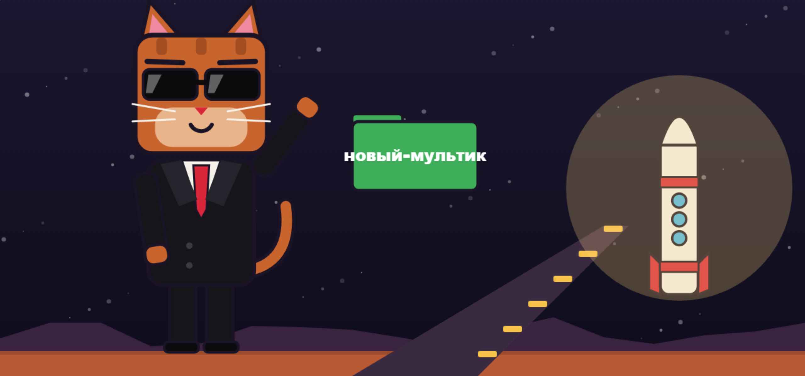
Сделайте первый ролик короче 30 секунд и доведите его до конца. После этого повторите процесс:
- Создайте новую папку или скопируйте рабочий шаблон.
- Обновите style.md под новую тему.
- Напишите новый сценарий.
- Используйте те же промпты и проверки.
Чем лучше описаны стиль и рабочий шаблон, тем быстрее выходит каждый следующий мультик.
Если застряли, напишите автору курса: Скопируйте и заполните шаблон ниже.
Система: Mac или Windows
Глава и шаг:
Что я хотел сделать:
Команда или промпт:
Что произошло:
Текст ошибки:
Что уже пробовал:
Скриншот: Словарь
| Термин | Простыми словами |
|---|---|
| Терминал | Окно, в котором вы вводите команды |
| Claude Code | Программа, которая выполняет задания прямо в вашей папке |
| Промпт | Текст задания для Claude |
| Рендер | Создание видео из кадров |
| Контрольный кадр | Одна картинка для проверки сцены до полного рендера |
| Таймстамп | Точное время слова в озвучке |
| Контекст | То, что Claude держит в памяти в текущем разговоре |
| Скилл | Сохранённая инструкция для повторяющейся задачи |
| CLAUDE.md | Файл с постоянными правилами проекта |
| ffmpeg | Программа для сборки и обработки видео |
| Агент | Отдельный помощник Claude с одной ролью (хук, звук, прогноз…), которого можно отправить разбирать ролик |
| Рой агентов | Несколько агентов, которые разбирают одно и то же и спорят между собой |